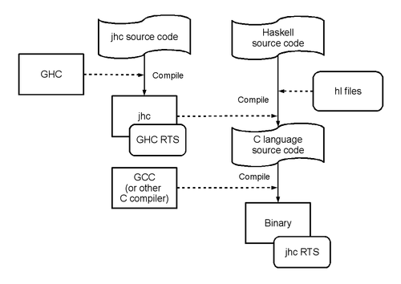
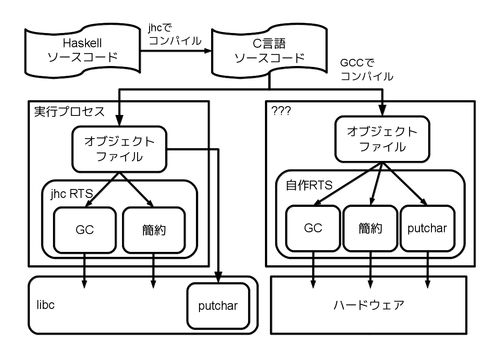

簡約!λカ娘(4)の紹介とjhcのすゝめ
Table of contents
この記事は Debian/Ubuntu JP Advent Calendar 2012 : ATND と Haskell Advent Calendar 2012 の12/22(土曜)分でゲソー。
またもや 関数型プログラミングの本 が出るでゲソ。コミックマーケット83 3日目 東地区 Y-02a で頒布予定なので、みんな買ってほしいでゲソ!

- 第1章 インターフェース
- 第2章 Lighter than Light # <= コレ書いた
- 第3章 類は友を呼ぶ?
- 第4章 OCaml で printf じゃなイカ?
- 第5章 Haskell でも printf じゃなイカ?!
- 第6章 けいさん! highschool
がもくじで、 @master_q は第2章を書いたらしいでゲソ。 この章ではHaskellで書かれたフィボナッチ数列のみを表示する プログラムをどこまで小さくできるか、GHCを改造することで挑戦しているゲソ。 記事が気になったら是非 サンプル版pdf を読んでみてほしいでゲッソ!
Haskellコンパイラjhc
GHCの話はこの本に力いっぱい書いたので、 今日はまた別のHaskellコンパイラの話をしようと思うでゲソ。 HaskellのコンパイラにはGHC以外にも 実装がある んでゲソ。 その中でもワシが注目しているのは jhc でゲソ。
インストール
まずはインストールしてみるでゲソ。 この記事での想定環境はDebian GNU/Linux sid amd64 2012年12月22日時点でゲソ。
$ sudo apt-get install autotools-dev autoconf libwww-perl drift ghc libghc-readline-dev libghc-utf8-string-dev libghc-hssyck-dev libghc-fgl-dev libghc-zlib-dev libghc-regex-compat-dev libghc-random-dev libreadline-dev libncurses5-dev darcs
$ darcs get http://repetae.net/repos/jhc
$ darcs log|head -2
Wed Mar 14 07:58:54 UTC 2012 John Meacham <john@repetae.net>
* fix 'distcheck', include compat/ in tarball
$ autoreconf -i
$ ./configure
$ make
$ sudo make install
$ jhc --version
jhc 0.8.1 (0.8.0-59)
compiled by ghc-7.4 on a x86_64 running linux簡単にインストールできたじゃなイカ。
jhcの威力を見よ!
ためしに簡単なプログラムをコンパイルして、GHCとjhcの比較をしてみなイカ？
$ cat Fib.hs
fibonacci :: [Int]
fibonacci = 1:1:zipWith (+) fibonacci (tail fibonacci)
main :: IO ()
main = print $ take 40 fibonacci
$ ghc -o Fib_ghc Fib.hs
$ jhc -o Fib_jhc Fib.hs
$ size Fib_ghc Fib_jhc
text data bss dec hex filename
705068 38536 46776 790380 c0f6c Fib_ghc
15808 1300 744 17852 45bc Fib_jhc
$ ldd Fib_ghc Fib_jhc
Fib_ghc:
linux-vdso.so.1 (0x00007fffaadff000)
libgmp.so.10 => /usr/lib/x86_64-linux-gnu/libgmp.so.10 (0x00007f671ef83000)
libffi.so.5 => /usr/lib/x86_64-linux-gnu/libffi.so.5 (0x00007f671ed76000)
libm.so.6 => /lib/x86_64-linux-gnu/libm.so.6 (0x00007f671ea7b000)
librt.so.1 => /lib/x86_64-linux-gnu/librt.so.1 (0x00007f671e873000)
libdl.so.2 => /lib/x86_64-linux-gnu/libdl.so.2 (0x00007f671e66f000)
libc.so.6 => /lib/x86_64-linux-gnu/libc.so.6 (0x00007f671e2c6000)
libpthread.so.0 => /lib/x86_64-linux-gnu/libpthread.so.0 (0x00007f671e0aa000)
/lib64/ld-linux-x86-64.so.2 (0x00007f671f22a000)
Fib_jhc:
linux-vdso.so.1 (0x00007fff1ef3b000)
libc.so.6 => /lib/x86_64-linux-gnu/libc.so.6 (0x00007f39020b3000)
/lib64/ld-linux-x86-64.so.2 (0x00007f3902493000)なんと! 同じソースコードをコンパイルしたのに、 jhcの吐き出す実行バイナリはGHCの1/40のサイズでゲソ。 しかも依存ライブラリはlibcのみ。 これはどんな魔法なんでゲソ？
jhcのしくみ
イカの図はjhc本体のコンパイルとjhcによるHaskellコードのコンパイルの関係を表わしているでゲソ。

まずjhcはGHCによってコンパイルされるGHCの一アプリケーションでゲソ。 jhcがGHCによってコンパイルされるということはjhcはGHCのRTSで動くでゲソ。 このjhcがHaskellのソースコードをコンパイルする際はイカの段階をふむでゲソ。
- HaskellのソースコードをパースしてCoreに変換
- 依存するhlファイルを読み込む
- 1と2を混ぜて最適化
- C言語ソースコード出力
- 4をGCCなどのC言語コンパイラにかける
- jhcのRTSをコンパイル
- 5と6をリンクして実行バイナリ作成
hlファイルというのは、GHCで言うところの静的リンクオブジェクト(hoge.a) とインターフェイスファイル(hoge.hi)を合わせたモノと機能としてはだいたい同じでゲソ。 その実体はCoreまで変換されたHaskellのソースコードの寄せ集めでゲソ。 GHCとは異なりjhcはhlファイルの中に完全な実コードを持たせてより強力な最適化を行えるようにしているんでゲソ。 1
GHCと比較して、このコンパイル方式の特徴としてはイカが挙げれるでゲッソ。 特にcが効いているためにGHCと比較してバイナリサイズが小さくなるんじゃなイカ？
- 全ての要素はC言語を経由してバイナリになる
- jhcのRTSはC言語で記述され、3000行程度ととても小さい
- 全ての要素を混ぜてから最適化をかけるため、実行バイナリから不要な部品は削除される
jhcのコンパイプパイプラインについては An informal graph of the internal code motion in jhc (pdf) が詳しいでゲソ。
jhcの持つ可能性
このjhcはどんな用途に使えるんでゲソ？ まず思いつくのは移植性でゲソ。 C言語化にしてしまった後クロスコンパイラにかければ簡単にクロスコンパイル対応Haskellコンパイラの完成じゃなイカ! 実際、jhcには targets.ini というクロスコンパイルのための設定があって、 C言語をどのコンパイラでどんなフラグをつけてコンパイルするのか仕向け設定ができるでゲソ。
さらに -Cオプション を使うとコンパイルパイプラインをC言語を吐いた段階で停止させることができるでゲソ。 一見あまり使い道がなさそうなこのオプション、実は様々な用途に使えるんでゲソ! 一例としてはjhcを使ってコンパイルしたHaskellプログラムと自分で作ったカスタムRTS(もしくはjhcのRTSを改造) と組み合わせてlibcのないような特殊な環境下でHaskellプログラムを動作させるでゲソ。 …実感しにくいので、もっと具体的に話すでゲソ。
$ jhc -C -o Fib_jhc.c Fib.hs
$ gcc -I/home/kiwamu/src/jhc-arafura/rts -std=gnu99 -D_GNU_SOURCE -falign-functions=4 -ffast-math -Wextra -Wall -Wno-unused-parameter -fno-strict-aliasing -DNDEBUG -D_JHC_GC=_JHC_GC_JGC -c Fib_jhc.c
$ nm Fib_jhc.o | grep "U "
U arena
U eval
U find_cache
U putchar_unlocked
U s_alloc
U saved_gc上記のようにjhcのコンパイルパイプラインを-Cオプションを使って C言語ソースコードで生成直後で止めるでゲソ。 さらに生成されたC言語ソースコードをGCCを使ってオブジェクトファイルにすると たった6つのシンボルにしか依存していないことがわかるでゲソ。 この6つの未解決シンボルは通常jhcのRTSによって解決されるのでゲソが、 もちろん自作しても問題ないのでゲソ。 GHCと異なり、このシンボルはイカのように単純な機能しか持っていないので、 自作するのも現実的な貝なんでゲッソ! もちろん自作RTSから直接ハードをさわるのも面白いかもしれないでゲソ。 これでどんな場所へもHaskell潜水艦でスイスイーじゃなイカー。

なんだか上の図をぼーっと見ていると、自作RTSがkernelのように見えてきたでゲッソ。
Debianパッケージ化
こんなにjhcが便利なら、ありとあらゆるマシンに手軽にインストールしたくなイカ？ 2012年12月22日(土)時点ではまだDebian本家には登録完了していないでゲソが、 anonscm.debian.org Git - collab-maint/jhc.git からjhcのソースパッケージを取得できるようでゲソ。 ソースパッケージからバイナリパッケージをビルドしてみるでゲソ。
$ git clone git://anonscm.debian.org/collab-maint/jhc.git
$ cd jhc
$ debuild -i -us -uc -b
$ ls ../*.deb
../jhc-doc_0.8.0~darcs20120314-1_all.deb ../jhc_0.8.0~darcs20120314-1_amd64.deb
$ sudo dpkg -i ../jhc_0.8.0\~darcs20120314-1_amd64.deb
$ which jhc
/usr/bin/jhcドキュメントと実行ファイルを別パッケージに分割してくれるようでゲソ。 自然言語を読まないワシにはjhc-docパッケージなぞ不要でゲッソ! パッケージでインストールすると、何が何処にインストールされたかわかって便利でゲソ。
$ cat /var/lib/dpkg/info/jhc.list
--snip--
/usr/share/doc/jhc/copyright
/usr/share/doc/jhc/changelog.gz
/usr/share/doc/jhc/changelog.Debian.gz
/usr/share/jhc-0.8
/usr/share/jhc-0.8/containers-0.3.0.0.hl
/usr/share/jhc-0.8/safe-0.2.hl
--snip--
/usr/share/jhc-0.8/jhc-prim-1.0.hl
/usr/share/jhc-0.8/html-1.0.1.2.hl
/usr/share/man
/usr/share/man/man1
/usr/share/man/man1/jhc.1.gz
/usr/bin/jhci
$ cat /var/lib/dpkg/info/jhc-doc.list
--snip--
/usr/share/doc/jhc-doc/building.shtml
/usr/share/doc/jhc-doc/development.shtml
/usr/share/doc/jhc-doc/jhc-vs-ghc-assembly.txt.gz
/usr/share/doc/jhc-doc/copyright
/usr/share/doc/jhc-doc/conventions.txt
/usr/share/doc/jhc-doc/manual.html
/usr/share/doc/jhc-doc/manual.css
/usr/share/doc/jhc-doc/c-minus-monad.txt.gz
/usr/share/doc/jhc-doc/type-classes.txt.gz
/usr/share/doc/jhc-doc/changelog.gz
/usr/share/doc/jhc-doc/big-picture.pdf.gz
/usr/share/doc/jhc-doc/announce
/usr/share/doc/jhc-doc/announce/announce-0.7.4.txt
--snip--
/usr/share/doc/jhc-doc/announce/announce-0.7.7.txt
/usr/share/doc/jhc-doc/changelog.Debian.gz
/usr/share/doc/jhc-doc/index.shtml
/usr/share/doc-base
/usr/share/doc-base/jhcんーパッケージ化してプログラムを管理するっていい気持ちでゲッソ!
2012/12/23修正: @shelarcyさんからの指摘を受けて修正↩︎
blog comments powered by